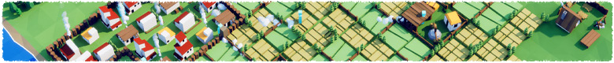
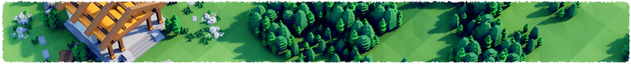

A Little Age
Settle a new land, gather resources, and grow small hamlets into thriving settlements. Build and expand villages across the map, move and share resources between local economies, and unite them in the construction of a great temple.
Independent Settlements, Shared Goals
A group of settlers from the south carve out a new life among ancient forests, hills, and the silent ruins of people long gone. Each settlement grows independently, working the land, turning resources into gold, and shaping its own economy. Balance production, guide trade between communities, and help them share their reserves. Together, they must contribute to a single monumental project that binds them all to this new land.
Gather, Build, and Expand
Gather resources from the land, build mines and farms, and turn raw materials into wealth. Grow your settlement, improve its output, and found new communities as you spread across the map. Manage production and move resources between settlements to support expansion and construction. As you grow, shape the land itself, watching forests give way to farms, roads, and towns built to sustain your people.

A Single Monumental Project
There is a sacred place in this land, honored by the ancients and still recognized by those who live here today. Its stones stand in quiet ruin, a reminder of older peoples and older gods. You feel compelled to act, to leave a mark of your own time. To bring the thriving communities together, pool their resources and labor, and raise a new monument upon these foundations. A great temple, built over what came before, shaped by effort, belief, and shared purpose.
